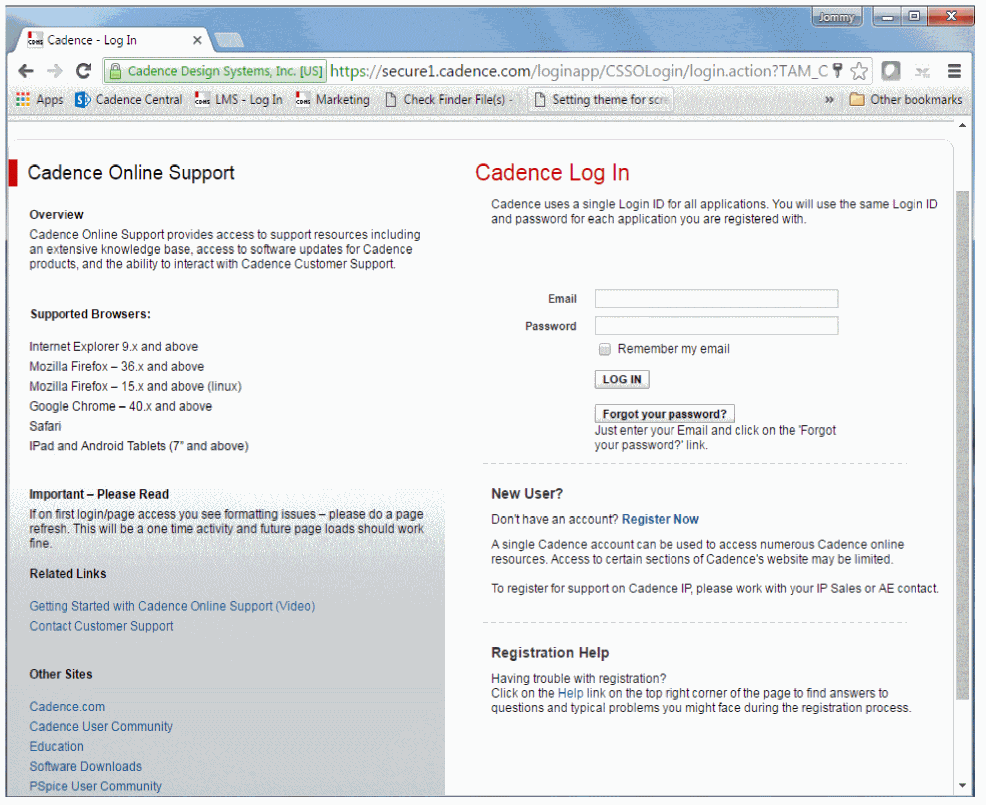
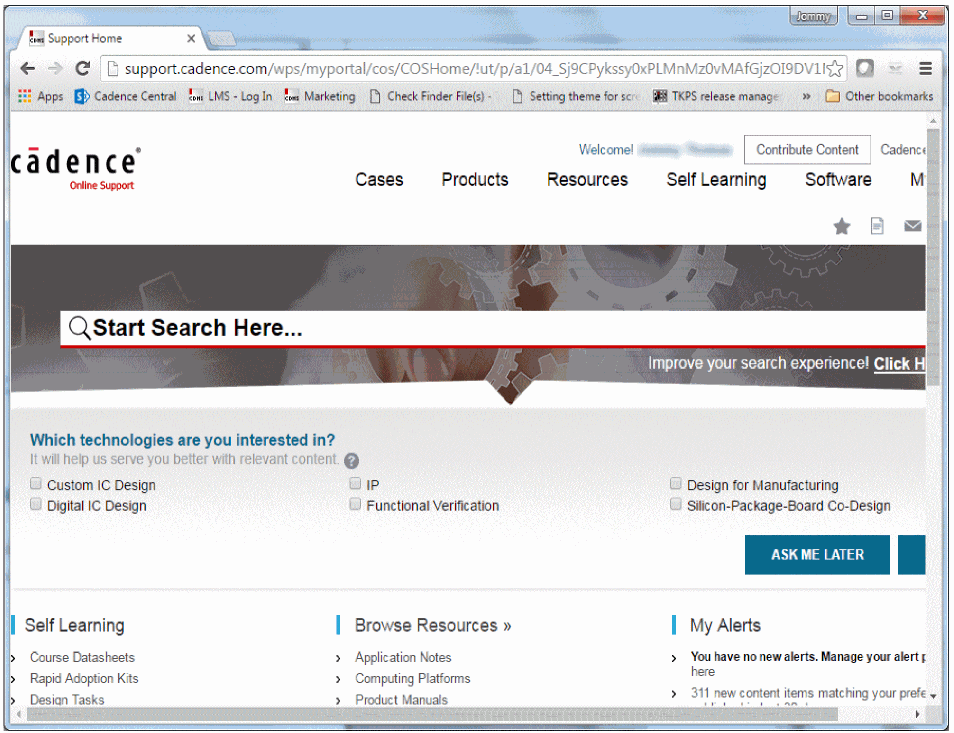
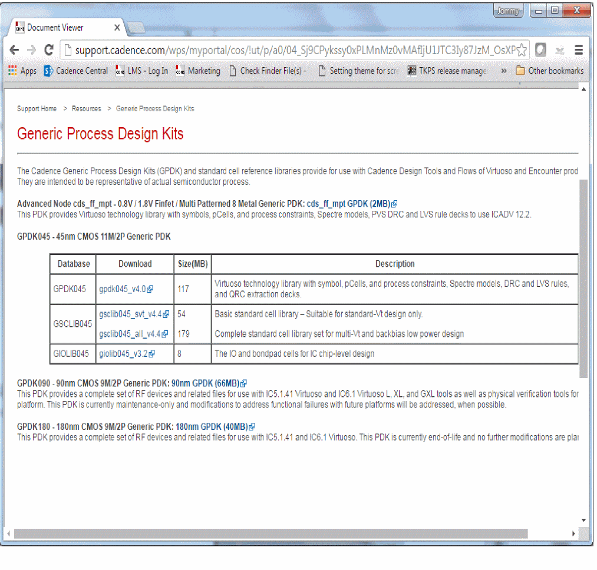
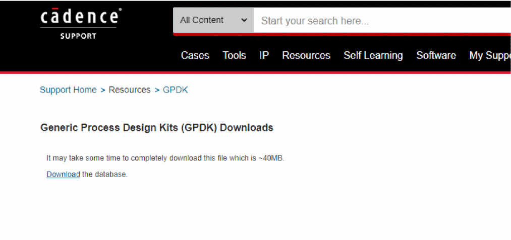
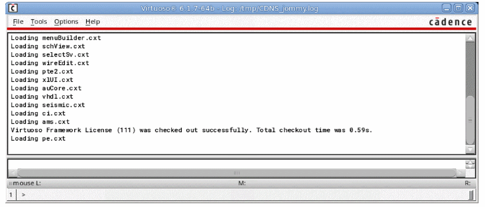
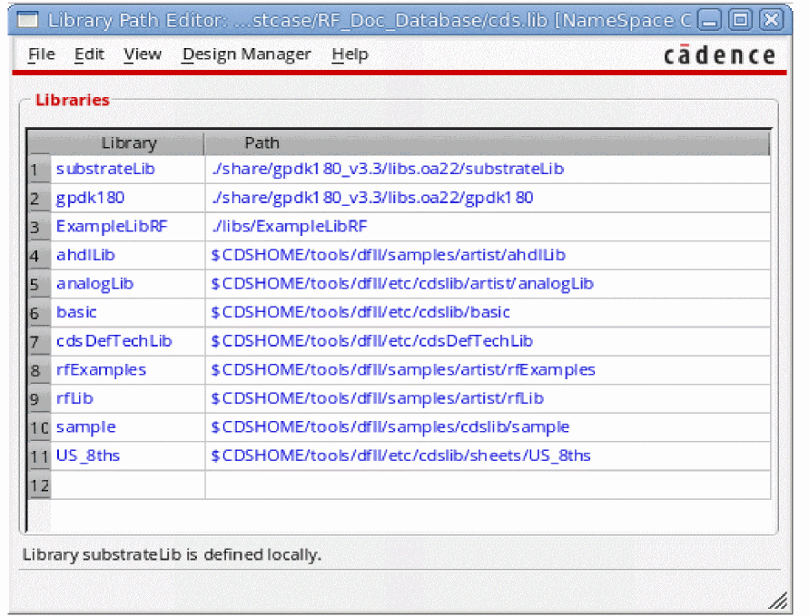

1
Introduction
This chapter introduces you to the basic building blocks of running successful and effective high frequency simulations using the Cadence® software. The following sections and screenshots explain how to set up your software and environment to run the example circuits in this chapter.
Before you perform the various SpectreRF analyses, you need to set up the component files and start the Cadence® software, as explained in the sections below.
Using SpectreRF from the SPECTRE Hierarchy
The Spectre Circuit Simulator (Spectre) and SpectreRF are present in the SPECTRE release stream.You must download and install the SPECTRE simulator in a separate installation hierarchy than the IC hierarchy you use for the Cadence software. Documentation for new features and most bug fixes are provided exclusively with the SPECTRE release stream.
The SpectreRF examples in this chapter use the CDSHOME environment variable to point to the installation hierarchy.
|
Modify this path as necessary to point to the IC installation directory. |
CDSHOME may already be set in your environment. If it is already set, then there is no need to reset it. Please check with your Cadence Tool System Administrator for more information.
Accessing the Most Current SpectreRF Documentation
The documentation for the latest features of SpectreRF is always found in the SPECTRE hierarchy.
Creating a Local Editable Copy of the ExampleLibRF Library
Perform the following steps to create a copy of the ExampleLibRF library and save it to your home or working directory:
- Navigate to the directory where you want the workshop to be located.
-
Use the UNIX
cpcommand to copyRF_Doc_Database.tar.gzfrom the hierarchy to your desired directory.cp <path to>/RF_Doc_Database.tar.gz
-
Type
tar xfz RF_Doc_Database.tar.gz.
Work with your system administrator to locate the SPECTRE installation directory at your site. This will be in the SPECTRE hierarchy at <SPECTRE>/tools/spectre/examples/SpectreRF_workshop/RF_Doc_Database.tar.gz
Downloading and Using GPDK180
PDK is an abbreviation for Process Design Kit. A PDK is a complete set of technology files to enable analog and mixed signal custom IC circuit design within the Cadence Design System’s Custom IC Design Environment. These PDKs are available for download online.
- Navigate to <path to>/RF_Doc_Database.
-
Use the UNIX
lscommand to list the contents in the directory.
You will see the following files and directories:
This directory structure is organized as follows:
-
cds.lib: The Cadence library file for the project -
simulation: Simulation directory -
libs: Directory containing the libraries for the project -
skill: Any SKILL code needed -
models: Spectre models that are not gpdk specific -
share: Directory where gpdk180 is located after being downloaded from thepdk.cadence.comsite.
-
For example, the gpdk needs to be present in the /share/gpdk180_v3.3 directory.
The models are present in the /share/gpdk180_v3.3/models/spectre directory.
To download gpdk180, follow these steps:
-
Open a browser and go to http://support.cadence.com. The Cadence Online Support website is displayed, as shown below.
Figure 1-1 Cadence Online Support Website -
Specify your email and password in the Email and Password fields and click LOG IN.
For the example designs in Appendix A, you need to use Cadence’s GPDK180 which can be downloaded as follows.
-
Enter your email and password.
The Support Home web page is displayed, as shown below.
Figure 1-2 Cadence Support Home Page -
Select Resources - GPDKs. The Generic Process Design Kits Web page is displayed, as shown below.
Figure 1-3 Generic Process Design Kits Web Page -
Click the 180nm GPDK (40MB) link. The Software License Agreement page is displayed, as shown below.
- Scroll down the page and click I ACCEPT.
-
The Generic Process Design Kits (GPDK) Downloads Web page is displayed, as shown below.
 -
Click Download the database.
The file will start downloading. The time taken to download is about a minute, but that varies depending on the nature and speed of your Internet connection. -
Save the file
gpdk180_v3.3.tar.gzto<path to>/RF_Doc_Database/share. -
Navigate to the
RF_Doc_Database/sharedirectory and untar thegpdk180_v3.3.tar.gzfile using the following command.
tar -xvzf gpdk180_v3.3.tar.gz
Starting Virtuoso
To access the Library Path Editor, perform the following steps:
-
In a UNIX window, type
virtuoso&to start the Cadence software.
The Command Interpreter Window (CIW) is displayed, as shown below.
Figure 1-4 Command Interpreter Window - In CIW, choose Tools – Library Path Editor.
-
The Library Path Editor is displayed.
This next step is to check that all of the libraries necessary are accessible. You will not be changing anything.
Figure 1-5 Library Path Editor WindowMake sure that all of the library names are displayed in blue or green. If any libraries are displayed in red text, there is an error and you need to work with your system administrator to fix the path. - Exit the Library Path Editor.
Return to top